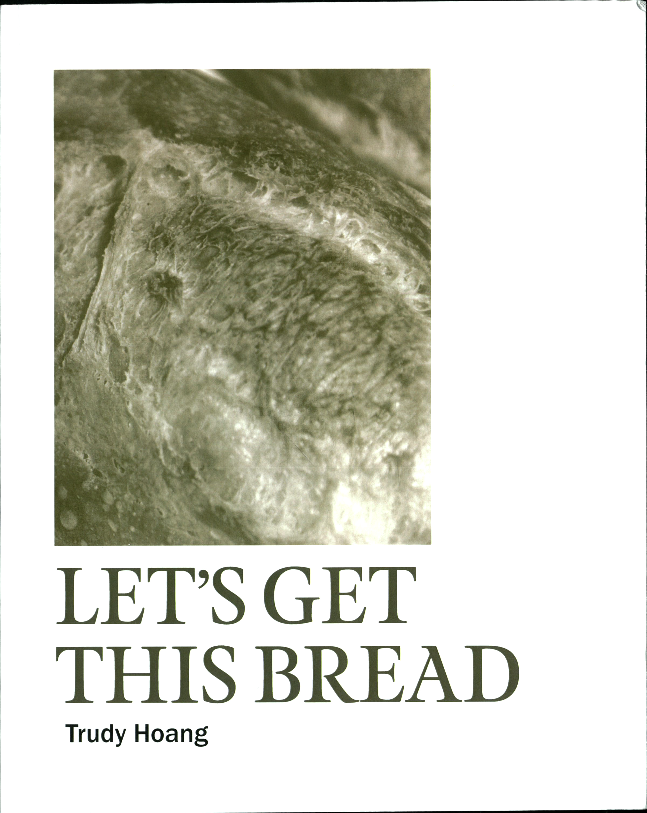
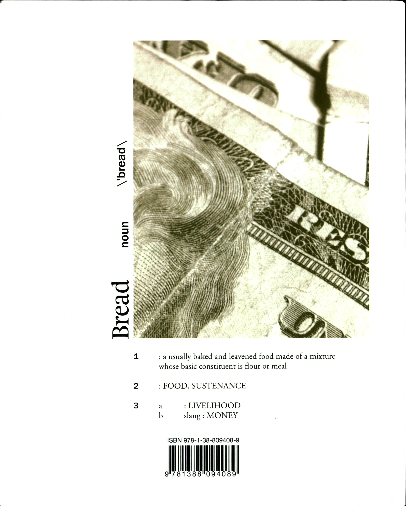

LET'S GET THIS BREAD


LET'S GET THIS BREAD is based on the internet phenomenon, "Let's get this bread", and explores the meaning of that phrase, starting from the definition of bread as mankind's lifesource, to bread as value.

Layout and photography was done by me. Written content is found articles and journals, curated by me.